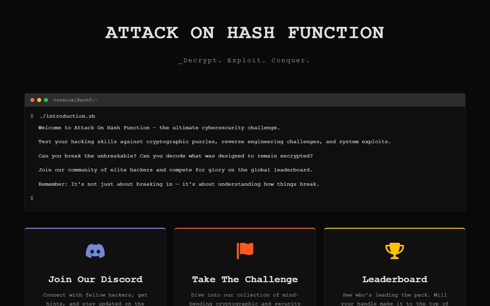
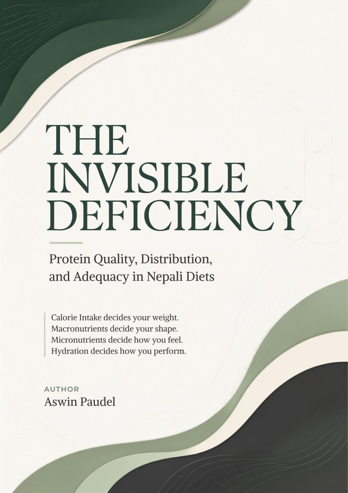

CCEP
Certified Cybersecurity Educator Professional
Red Team Leaders · Nov 2025
Verify CredentialA jack of all trades is a master of none, but oftentimes better than a master of one.”
Proverb
I'm Aswin Paudel, a graduate of the Bachelor's (Hons) programme in Cybersecurity and Ethical Hacking. My core focus is security and ethical hacking, but I approach learning as an open-ended pursuit: if something sparks my curiosity, I dig into it, regardless of field. I also have a long-standing interest in philosophy, which shapes how I think through problems.
I lean generalist by design. I'd rather build broad, adaptable competence across domains than specialize narrowly in one. I'm drawn to leadership and enjoy directing teams toward a shared outcome. Before I commit to a task, I want clarity on its purpose: what we're actually trying to achieve, and why. Once I'm in, I hold the work to a high standard and see it through with precision.
“I value autonomy over rigid structure. I'm most productive working on my own terms rather than a fixed schedule, and I bring that same energy and curiosity to whatever I take on next.”
August 2026 — Present
Patanjali Yogpeeth, Haridwar
Bachelor's Degree
Softwarica College of IT & E-Commerce, affiliated with Coventry University, London
First Class Honours
Higher Secondary (+2)
Gorkha International Boarding School
CCEP
Red Team Leaders · Nov 2025
Verify CredentialCLLMSP
Red Team Leaders · Jun 2026
Verify CredentialDigital Forensics
A tool that automates digital forensic analysis, built on the Volatility memory forensics framework.

Web Platform
“Attack On Hash Function” — a capture-the-flag competition portal, hand-built with vanilla web technologies.
Organizer
Organized the Haritalika Teej celebration at Indira Gandhi Stadium, New Delhi.
Member
Contributed to club events and the student tech community at Softwarica.
See Club PhotosParticipant
Took part in TechX in two consecutive editions, 2023 and 2024.
Host & Organizer
Organized a capture-the-flag competition with 50+ challenges across a range of security domains.
Organizer
Organized the capture-the-flag competition for Pentester Nepal’s 10th anniversary.

Featured Research
A study examining the quality, distribution and adequacy of protein in Nepali diets.
Dear reader,
I’m open to collaborations, security engagements, and good conversations. If something here caught your eye, I would be glad to hear from you.
Write to me at
7077ashwin7@gmail.comWith warm regards,Aswin Paudel